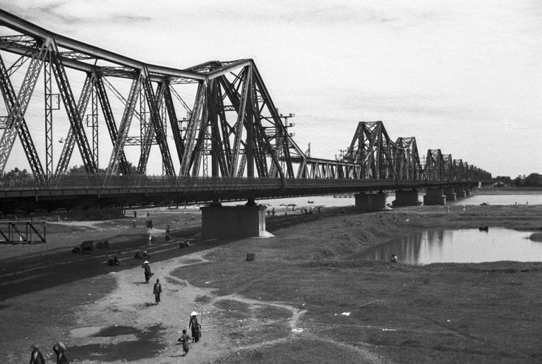
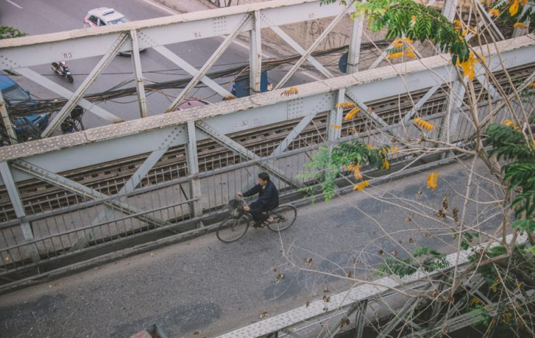
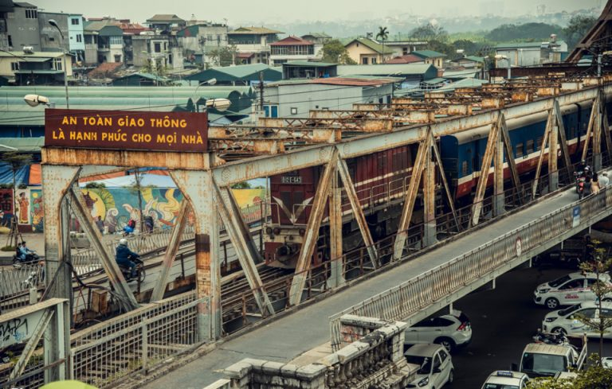

Cầu Long Biên
Cầu Long Biên với những ký ức, hoài niệm xưa
Cầu Long Biên đã từng là cây cầu dài thứ hai Thế giới
Cầu Long Biên là cây cầu thép đầu tiên bắc qua con sông Hồng nối hai quận Hoàn Kiếm và Long Biên của Hà Nội. Cây cầu do Pháp xây dựng từ năm 1898 đến 1902 dưới thời Toàn quyền Đông Dương lúc bấy giờ là Doumer. Cầu dài 2290m qua sông và 896m cầu dẫn, cầu gồm 19 nhịp dầm thép đặt trên 20 trụ với lối kiến trúc độc đáo. Cây cầu được thiết kế với một đường sắt đơn chạy ở giữa còn hai bên là hai làn đường dành cho xe đạp và người đi bộ. Có một điều mà ít người biết về cây cầu đó chính là việc nó đã từng là cây cầu dài thứ hai trên thế giới (chỉ sau cầu Brooklyn bắc qua sông East-River của Mỹ), thậm chí được gọi là tháp Eiffel nằm ngang của Hà Nội.
Cầu Long Biên vào năm 1940
Cây cầu đã chứng kiến những vui buồn của Thủ đô
Khung cảnh tấp nập và sầm uất xung quanh
Cầu Long Biên đã chứng kiến những dấu mốc quan trọng nhất của dân tộc hai cuộc kháng chiến lớn nhất của dân tộc ta chính là cuộc kháng chiến chống thực dân Pháp và tiếp đến là cuộc kháng chiến chống đế quốc Mỹ.
Cầu Long Biên
Cầu Long Biên chắc là cây cầu gắn với những kỉ niệm, cây cầu mà những bạn trẻ thường chạy xe ra dừng lại hóng gió một ngày hứng lên hay ngày nào đó cảm thấy bí bách cần một không gian thoáng đãng để thở. Cây cầu cũng là nơi các bạn sinh viên vẫn hay tụ tập ngồi lại đàn hát vui vẻ, là nơi lưu giữ những kỉ niệm tuổi trẻ của chúng ta.
Cafe Trần Nhật Duật
Quán cafe Trần Nhật Duật, tại tầng 4 với không gian mở có thể nhìn thấy cây cầu Long Biên xa xa. Đến đây bạn vừa có thể thưởng thức tách cafe, vừa chuyện trò và nhìn ra xa là cây cầu cổ kính, bãi đá sông Hồng, khu chợ sầm uất và cả một vùng không gian rộng lớn. Nơi đây sẽ cho bạn một góc nhìn khác về cầu Long Biên, đó là góc nhìn từ trên cao thay vì nhìn thẳng hay nhìn “hất” từ phía dưới bãi đá sông Hồng lên.
Ăn ngô khoai nướng
Mùa đông đến thì cầu Long Biên thực sự sẽ thành nơi lý tưởng nhất để ngồi lại ăn ngô khoai nướng, hưởng không khí lành lạnh gió rít bên tai và đưa tay tìm hơi ấm từ bếp lửa, hơi khoai nóng bốc lên ấm lòng vô cùng.
Cầu Long Biên chắc là cây cầu gắn với những kỉ niệm, cây cầu mà những bạn trẻ thường chạy xe ra dừng lại hóng gió một ngày hứng lên hay ngày nào đó cảm thấy bí bách cần một không gian thoáng đãng để thở.